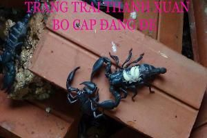

Bọ cạp giống & thương phẩm
Cung cấp bọ cạp giống, thu mua đầu ra bọ cạp thương phẩm tươi sống và đông lạnh quanh năm, số lượng không hạn chế trên toàn quốc và xuất khẩu.

Giá giống & giá thu mua
Giá bán giống
Giá thu mua
Khi bà con mua giống, trang trại ký hợp đồng và đóng dấu đầy đủ.
Bọ cạp đất Việt Nam
Trang trại nuôi bọ cạp xanh và bọ cạp đen (bọ cạp đất của Việt Nam). Nọc của loại này không gây nguy hiểm tới tính mạng, khi bị chích chỉ sưng tại chỗ rồi tự hết. Tuy vậy chuồng trại cần làm cẩn thận, để xa tầm tay trẻ nhỏ.
- Bọ cạp đẻ con. Bọ cạp con bám trên lưng mẹ khoảng 10 ngày rồi mới bò xuống tự kiếm mồi. Sau 5–7 lần lột xác thì trưởng thành.
- Thích hợp nhiệt độ 20–37°C. Ban ngày ở trong hang, ban đêm ra ngoài săn mồi. Sợ ánh sáng, chim, rết, thằn lằn, chuột.
- Phân biệt: con cái càng và đuôi nhỏ hơn, bụng to hơn con đực. Con đực mình dẹp, nhỏ con hơn.
Xây hồ nuôi bán hoang dã
Hồ nuôi là cách hiệu quả nhất: ít tốn công chăm sóc, an toàn, bọ cạp không sổng ra ngoài và ít đánh nhau.
- Xây bằng gạch, không cần láng xi măng. Dán một lớp gạch men quanh phía trong miệng hồ để bọ cạp không trèo ra.
- Cuốc đất trong lòng hồ cho xốp, đất không quá khô để bọ cạp tự đào hang. Đặt gốc tre, gốc cây và đắp thêm đất.
- Cho thêm gạch ống, ngói, tấm gỗ làm chỗ trú ẩn và giữ ẩm. Trồng cỏ lá nhỏ bò lan, gieo thóc để bọ cạp có chỗ ẩn nấp.
- Làm lỗ thoát nước nếu hồ không có mái che. Nên làm mái che ở vùng nắng to, mưa nhiều, rét hại.
- Bọ cạp mẹ đẻ trong hang tổ lớn nên không cần theo dõi để tách con, con non an toàn hơn.

Cho bọ cạp ăn
Thức ăn
Dế, sâu, các loại thịt, phổi, ếch, nhái, ốc sên, ốc bươu vàng, cá, tôm tép. Ăn được cả đồ sống và đông lạnh, thức ăn to thì băm nhỏ.
Mỗi con ăn khoảng 1 con dế một lần, vài hôm sau mới cho ăn tiếp. Nên cho ăn vào chiều tối. Bọ cạp con cho ăn dế nhỏ khoảng 1 tuần tuổi.
Giữ ẩm
Bốn ngày tưới nước sạch một lần, hoặc đặt khay nước cao 2–3cm để bọ cạp không chết đuối. Trời mưa ẩm thì không cần tưới.
Xếp lá khô, gỗ mục vào một góc hồ để côn trùng tự sinh sôi làm mồi tự nhiên cho bọ cạp.
Thu hoạch & vận chuyển
- Kiểm tra hồ
Lứa đầu khoảng 2 tháng, các lứa sau khoảng 1 tháng kiểm tra một lần. Theo dõi buổi tối khi bọ cạp bò ra kiếm ăn.
- Bắt bọ cạp
Dùng găng tay, đũa hoặc kẹp, hoặc cầm nhẹ từ phía trên gần đuôi để tránh bị chích.
- Đóng gói đi bán
Khoảng 5 con một túi nilon đục lỗ, buộc miệng, xếp vào thùng carton đục lỗ thông khí, đặt nằm mặt rộng nhất.
Nếu thu hoạch để chế biến: cho nhịn ăn 2 ngày cho sạch ruột, rửa sạch vài lần rồi chế biến hoặc cấp đông. Bọ cạp dùng chế biến món ăn, ngâm rượu và làm thuốc đông y (vị Toàn yết).